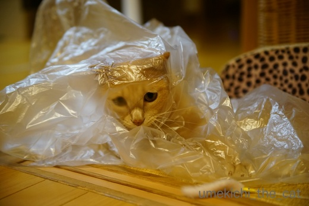
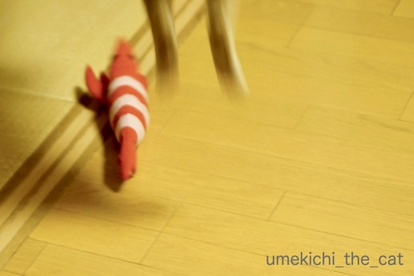

トンネルも良いけどたまにはビニール [梅吉]
単体では喜ばなくなってしまった「毛深いヨロコブラ」。
トンネルは酷使しているので今日はビニールと組み合わせて遊びましょう！



遊びの効果を高めるのと息苦しくならない様に（被せただけだから心配は無いのですが一応）
ビニールに切れ目を入れておくのもポイントです＾＾

捕まえられそうで出来ないのが楽しい様ですw

ヨロコブラを振り上げたら目線が追って可愛いお顔に！！
あ〜、ビニール無しで撮りたい表情でしたw

ビニール絡ませ遊びが楽しかったのか
最近は見向きもしなかったエビちゃんをガブケリ。

今日の写真は地震前のものですが地震後も元気いっぱい遊んで
もりもり食べてもりもり出している梅吉ですが・・・
聞き慣れない物音がしたり急に何かを動かすとものすごくびっくりする様になりました。
見ている私の方が驚くぐらい。
一昨日の夜、キッチンカウンターの上から外を眺めていた梅吉。
その傍にあったふきんをさっと引っ張ったら驚いてキッチンカウンターから転げ落ちて・・・
落ちた地点でボーゼンとしてうずくまっていました。
腰が抜けた？
すぐに抱き上げて落ち着かせたら普段通りになりましたが本当にびっくりしました。
初めての大きな地震、それなりに精神的ダメージはあった様です。
人間が動く時は急に動かない静かに動く、梅吉に触れる前はこれから触るよと感づかせてから触る
を今まで以上に気をつけようと思っている次第です。
まあ、白目で熟睡していますので深刻なものでは無いと思います(^_－)☆

カフェオレ色の梅吉

梅吉 2023年8月10日 永眠


梅吉と出会った譲渡会

犬猫の理由なき殺処分ゼロ
妄想広告
UMEKICHI 光

爆発的に早い！
時々攻撃的！
Thanks to Mr.Boss365
爆発的に早い！
時々攻撃的！
Thanks to Mr.Boss365

ああああーーーー＾＾
めっちゃ楽しそう！(ちぃさんが(笑))
梅吉ちゃんは必死に遊んでますね。
ちゃんとビニールに空気孔を作って入念なおもちゃ作りも楽しそう。
ビジールがイジイジってしちゃうんだろうな(*'▽')で、エビちゃんに突撃したのね！！！
ヨロコブラも再活性化だし、エビちゃん？も相手にしてもらって最高。
食べるマーラージャン、カルディで台湾フェアって気が付かなかったな。確かにこれはお家ラーメンでシビれ可能。パスタで(中華麺でもいいなー)ペペロンチーノの台湾バージョンも出来そうだ！！！
by ake_i (2018-06-21 16:10)
ちょっと飽きたおもちゃでも一工夫すると
遊んでくれたりしますよねぇ(^O^)
梅吉さんはビニールから透けて見える遊びが
お気に入りになったんですね(^_^)v
繊細な梅吉さんの心が地震でちょっと落ち着かないんですね(*_*)
早く心の平穏を取り戻すことが出来ますように<(_ _)>
by ニッキー (2018-06-21 16:13)
梅吉さん！楽しそうに遊んでますね～♪
ビニールから透けて見えるのが
またたまらなく可愛いです(#^.^#)
地震のトラウマですかね・・・
早く梅吉さんが落ち着いてくれますように！！
by きぃ (2018-06-21 16:15)
楽しんでいますね〜
梅吉さんの笑顔？
あまりに可愛いので、ビニルを加工して外して下さい（笑）
元気そうに見えても、見えないところで恐怖心が残っているのかもしれません。
繊細ですね。
かあちゃん、ケッパレ〜
by kiki (2018-06-21 16:20)
あのぉー「可愛いお顔に」って・・・そこは、“もっと”とか、“更に”を付けてあげないと、
こー見えてセンシティヴな梅吉様が傷ついちゃう(;_;)ヾ(￣o￣;)ｵｲｵｲ「こー見えて」は？
by middrinn (2018-06-21 16:27)
地震の後遺症 ありますよね びっくりさせない為のちぃさんの対応はたいへん正しいと思います テオも中越地震の時 余震の都度落ち着いた声でゼロに「怖かったね もう終わったよ」と言うようにしていました
ビニール越しの梅様のお顔が 可愛いっ！
by テオ (2018-06-21 17:31)
梅吉さん見上げたお顔がお目目ぱっちりで"さらにもっと"可愛いですね。
猫は普段でも不意を突かれると飛び上がって驚きますので、ちぃさんの優しいお気遣いで梅吉さんも安心すると思います。さっきゴンも夫が急に立ち上がっただけで、びっくりして段差を転げ落ちてました。(小心者です)
by zombiekong (2018-06-21 17:32)
こんにちは・こんばんは。
猫ちゃんて繊細なんですよね！！たくましく育っている梅吉君ですが・・・
当分の間は優しく見守ってください！！と思いながら・・・
ビニール越しの梅吉君は地震を完全に忘れている表情ですね！！（⌒ー⌒）
梅吉君ワープしてますね！？多分！？冷蔵庫上に！？(=^･ｪ･^=)
by Boss365 (2018-06-21 17:36)
うちでは緊急地震速報の音でパニクる状態が続きました。
テレビのニュースで流れても怖がって走り回っていたので
アホみたいに遊んであげたり、始終声かけしていました。
おうちの猫さんは、いつも守られていて、打たれ弱いんですかねぇ(^^;
by も〜 (2018-06-21 18:02)
梅吉さん、夢中ですね！
今日は足立美術館を見て来ましたが、日本庭園立派です(^ ^)
by ma2ma2 (2018-06-21 18:57)
ビニールで遊ぶ梅吉さん、可愛い～！
切れ目を入れる、ああ前にうちもやりました＾＾
東日本の震災のとき、みゅんはたぶん私の部屋に一人でいて、周りの本がたくさん落ちたんです。私が帰ったときは無事に机の下に隠れていたんですが、じつはトラウマになってました。室内で大きな音がしたり物が落ちると反応がすごく大きくなったんですよ。
猫は記憶力悪いようなこと本に書いてあるんですが、学者さんって飼ってないのかな？‥と謎に思います＾＾；
by sana (2018-06-21 21:28)
ビニール袋一枚で俄然テンションあがりますよね♪
本猫は楽しそうだけれど写真はうまく撮れない、悩みの種です(^▽^;)
地震のあと、梅吉さんもそうなんですね！
ウチのは普段からビビリですが、それに輪をかけて少しの物音や隣の部屋からのぞいただけでぶわっ！と一日10回はたわしっぽになってます。
対策として物を動かす前に「おか～ちゃんだよ～」と声かけたり、何かの音にビビッてたら「今のはおか～ちゃんのオナラでした～」と音の原因は下僕であるように振舞ったり・・・。
地震のトラウマから立ち直るにはもう少し時間がかかりそうです。
あ、ウチのもごはんはもりもり食べてます(*^▽^*)
by ゆきち (2018-06-21 21:39)
猫は音に敏感ですもんね。
（ウチのは鈍感ですが。^^;）
ひょっとしてガサゴソしたビニールの音で紛らわしているのかな。
梅吉さんの心が早く落ち着くといいですね。
by yes_hama (2018-06-21 21:57)
猫さんは敏感ですね。
驚かしてやろうと、そっと近づいて触ると、凄い勢いで驚く事があります。
ストレスにもなるので、面白がってやらないようにしています。
猫さんとは長い付き合いになるので、いつまでも仲良く暮らしたいです(^^)
by riverwalk (2018-06-21 22:39)
今度はビニール仕様！（笑）
ビニール好きですよねぇ。突撃しますよね。
しかし楽しそうです、梅さま。コーフンしてお鼻が赤くなってません？^^
地震はいっときの、東北のあの頃に
こっちでも頻繁にNHKの緊急地震速報のアラーム音が鳴り響いていて
あの音を聞くと未だにみんニャ怖がります。
わたしもドキドキしますが(｡-_-｡)
by Ja-Kou66 (2018-06-21 23:34)
うちも、あかりがビニールに入り込んで、
私が外からつつく指を捕まえる（噛みつく）遊びが
流行っています((´∀｀))
梅吉さん、ビニール袋に蹴りぐるみのパターンも
楽しそうですね(≧▽≦)
by マーヤ (2018-06-22 00:57)
楽しそうだニャ～
by えーちゃん (2018-06-22 01:07)
かわいいですけどねぇ、ビニール袋は怖いです＾＾；
by ぽちの輔 (2018-06-22 06:19)
ビニール遊びはサイコー！！だね。
酸欠にならないようにねw
by じゅらまろ (2018-06-22 09:55)
あーん！
ビニールなしでその顔が見たかった！
めちゃめちゃ可愛い顔してるよっ
うみは、未だに単体で毛深いヨロコブラ大好き^^;
毎日くわえて、ふとんの周りをうろうろしてたけど、
蚊帳が来てからは、夜中にそれをやるのは諦めたみたいよ！
地震のあと、あおもかなりそのことを引きずっていたよ。
梅吉君もちょっと時間がかかるかもしれないけど、ちぃさんが傍にいれば大丈夫だよ^^
by リュカ (2018-06-22 10:50)
遊び飽きたおもちゃも、遊び方を変えれば！！
梅吉くん楽しそう。ハッスル(ｗ)してるね。
ビニールの中から見上げる可愛いお顔。ホント！ビニール無しで見たかった～。
でもビニール越しでも可愛さはわかるよ(≧▽≦)
しかもちぃさん。切れ目まで入れてあげているなんて！
私、見てれば大丈夫でしょうって、何もしてあげてなかったよ～。
元気に遊んでご飯もたくさん食べて。白目で熟睡して。
そんな毎日を過ごさせてあげたいですね。
怖い気持ちが1日も早く和らいでくれますように(*^-^*)
by emi (2018-06-22 15:27)
ake_iさん＞
あはは(≧▽≦)ばれちゃいましたかー！
梅吉と遊んでいると「そこの二人楽しそうですね」と
おっとによく言われますw
（少々面倒な時もありますが）梅吉と遊ぶのは楽しいですよー＾＾
それに、、、遊ぶ側が真剣に楽しく遊ばないと
梅吉も楽しく遊んでくれないのですよ。。。
ガサツなようでいて梅吉はその辺のニンゲンの気持ちを
ちゃんと見ている様に思えます。
麻辣醤、見ていただけたのですね！
レギュラー商品でも良いと思うのですが
台湾フェア以降見かけていません。
鍋の薬味や焼きそばのトッピング、もちろんラーメンにも
と使い勝手が良い醤なので残念ですー。
我が家は未開封のが後ひと瓶（ﾆﾔﾘ・・・
ニッキーさん＞
キャットトンネルもそうなのですが
透けて見える、が梅吉の気持ちをくすぐる様です＾＾
もっともトンネルは透けて見えるから
穴があいて見えるになりつつあるのですが(^▽^;)
梅吉の緊張は日１日と和らいでいる様に見えるのですが・・・
ゆっくりと暖かく見守ろうと思っています。
お気遣いありがとうございますm(_ _)m
きぃさん＞
写真で見て「ああ、こんな可愛い顔して遊んでいたんだー！」と
感激でしたよ＾＾
遊んでいる最中はジャラシを振るのに夢中で
全然顔の表情を気にしていませんからw
梅吉のびっくりする頻度も減ってきた様な・・・
ゆっくりと暖かく見守ろうと思っています。
お気遣いありがとうございますm(_ _)m
kikiさん＞
心の目でビニールを外してくださいませ(^_－)☆
おそらくとびっきりの笑顔で
嬉しそうにジャラシを見上げていると思われます＾＾
人間も平気そうに見える人ほど
心に諸々を抱え込んでいることがありますものね。
自分の気持ちを言えない分、あの時何があったのか理解できない分
梅吉は恐怖を抱えたままなのでしょう・・・
おかーさん、梅吉全面サポートけっぱります(｀_´)ゞ
middrinnさん＞
おおお！梅吉が可愛すぎる日常が当たり前すぎて
配慮に欠けていましたね！！
今夕はおわびのニャンコ牛乳♡
テオさん＞
おお！話しかけも有効そうですね＾＾
明確に理解はしないかもしれませんが
伝わるものはあるはず、ですよね。
私もそうしてみます＾＾
ビニールがあっても可愛いってどういうことー！！！
って思いました(≧▽≦)
ねこって素晴らしい。。。
zombiekongさん＞
そう＾＾「さらにもっと」可愛いいのです！
フォローありがとうー(^_－)☆
確かに幼い頃はぜんっぜん物音にも驚かなかったのに
（地震の後はまた別として）
大人になってからは物音や急に人が動くとびっくりする様になりました。
にゃん格が確立されてきたのでしょうか・・・
成長の証なのですよね＾＾
Boss365さん＞
遊んでいるときは夢中で気が紛れているのでしょうか＾＾
ならば頑張ってお相手せねば！！
がさつそうに見えて梅吉も繊細なんだな・・・
と冷蔵庫の上で白目をむいている寝顔を見ながら思っております。
冷蔵庫の上からさらに何処かへワープしている様ですよwww
も〜さん＞
テオさんもおっしゃっていましたが
話しかけ、有効な様ですね＾＾私もやってみます！！
地震は揺れ自体猫にとって不可解な恐怖体験なうえ
聞き慣れない物音が一斉に鳴るのが怖いのかもしれませんね。
緊急地震速報、人間でもドキドキしますものね・・・
動物にとって嫌いな周波数でも出しているのかも。
ma2ma2さん＞
足立美術館のお庭、インスタで拝見しましたよー。
あんまり綺麗に手入れされているので絵かと思いました＾＾
sanaさん＞
突然の揺れと落ちてくる本、みゅんちゃん怖かったでしょうね・・・
でも机の下にちゃんと隠れて偉かったですね。
危険を避ける場所はちゃんとわかっていて。。。
猫の記憶力が悪い？それなはないですよねー！
たった一度でもイレギュラーな時間におやつをあげると
それ以降も同じ時間におやつを催促する様になりますよね。
え？梅吉だけ？？(〃▽〃)
研究室で飼っている猫だけじゃ何にもわかりませんよね。
動物園で飼育されてるライオンを見て野生のライオンの習性を
わかった気になっている様な感じ・・・
by ちぃ (2018-06-22 18:26)
梅吉くん地震の影響が出てるのですね(T_T)こわかったんだね。早く元に戻って～～！
ナイロン袋一枚で楽しいひと時。いい子だねぇ(#^^#)
by palpal (2018-06-22 20:49)
梅吉さん、楽しんでますね。
by ニコニコファイト (2018-06-23 06:28)
わぁ、梅吉さん、地震が怖かったのですね〜
かなり被害が出ている地域もあるようで･･･大変でしたね。
でも、白目で熟睡されているなら、トラウマもすぐに治まるかな？(^_^;
楽しい遊びで、忘れちゃおうぜっ!!!
by のらん (2018-06-23 08:13)
おはようございます。
「言わぬが花」の名前「マダガスカルジャスミン」と教えて頂き感謝です！！
取り急ぎ、お礼申し上げます！！(=^･ｪ･^=)
by Boss365 (2018-06-23 10:46)
ゆきちさん＞
ビニールと紙袋は困った時のお助けアイテムですよね＾＾
たわしっぽ！恐竜みたいに背中の毛を逆立てながら
梅吉もなっています・・・
あまり気を使いすぎるのも神経質になるかなと
あははと笑いながら撫でてあげる様にしていますw
ゆきちさんは自虐的に笑いを取る方法で
こてつくんを和ませて差し上げているご様子( ´艸｀)
追い討ちをかける様な余震（もちろん本震も）が
ないことを願うばかりですね=´ᆺ`=
yes_hamaさん＞
アズ氏はどーんと構えているタイプなのでしょうか。
頼もしいお方＾＾
日１日と落ち着いてきている様には思いますが
猫様の心のうちばかりは判りませんので
注意して見ていこうと思っていますよー。
お心遣いありがとうございますm(_ _)m
riverwalkさん＞
なるべくストレスを少なくするのが下僕の勤めですものね＾＾
そんなやさしい心遣いがユキちゃんに届いて
ユキちゃんはriverwalkさんが大好きなのですね！
この、このーーーー！！！幸せ者♡
どの子もみんにゃ家族と仲良く幸せに暮らして欲しいものです。
Ja-Kou66さん＞
はい＾＾ビニール。。
とにかくカサカサ、カシャカシャが大好きですよね(≧▽≦)
お鼻はちょっぴりにじにじでさらに走り回って熱くなって
いつもより色が濃くなっています。なんてかわいいんだー( ´艸｀)
あの緊急地震速報のアラームは生き物に
負の感情を植え付ける周波数でも出しているのでしょうか・・・
今回の地震、我が家ではテレビをつけていたのですが
テレビからのアラーム音は覚えていないのです。
スマホからのアラームと聞き慣れない「地震です。地震です」という
警告音は覚えているのですが。
しかも「地震です」は誰が（笑）言っていたのかわからない・・・
おそらくインターホンか火災報知器だと思うのですが。謎。謎。。
マーヤさん＞
やっぱりみなにゃんビニールが好きなんですよねー。
あのカサカサ音で更に盛り上がっちゃうみたいですよね＾＾
楽しそうだったので
エビちゃんをビニールにくるんでみたらキック炸裂☆
手が糸一本でかろうじて繋がっている状態になりましたw
えーちゃんさん＞
はい＾＾梅吉と一緒に飼い主も楽しんじゃいました( ^ω^ ）
ぽちの輔さん＞
切れ目＆梅吉の破った後がたくさんなので
空気穴は十分すぎるほどありますよー＾＾
でも十分気をつけますね(^_－)☆
じゅらまろさん＞
みんにゃ大好きビニール遊びだよねー＾＾
梅吉が積極的に空気穴作ってくれるよ！
賢い子ですwww
リュカさん＞
可愛い怨霊さんは未だ結界を破れず、ですね＾＾
（破られたら困るけどw）
猫は表情がクルクル変わるから写真で見て
「こんな可愛い顔してたんだ！」とびっくりすることが度々です。
またこんな顔してもらえる様に頑張って遊びのお相手するわー！！
怖かったことを忘れてもらうんじゃなくて
怖かったけどここにいれば大丈夫なんだ、って
思ってもらえる様にがんばるわー！！
（文末に韻を踏んでみましたwww）
emiさん＞
まさにハッスル＾＾
私もビニールは見てれば大丈夫でしょうって思いますよー。
遊んでいるうちハッスルして自分で空気穴作ってくれるしw
でも夜寝る前は片付けてます。
何かあったら心配もあるけど夜中にフィーバー（笑）して
騒がしくて眠れなくなりそうだからwww
日に日に恐怖心は薄らいでいる様に思うのだけど・・・
あまり神経質にならない様に気をつけて見ていよう、
と思っています。
お気遣いありがとうございますm(_ _)m
by ちぃ (2018-06-23 14:29)
palpalさん＞
図太そうに見えるけど結構繊細でした＾＾
そんなところにきゅ〜〜〜〜ん♡
そんないきさつのせいか夜中寝苦しくて目がさめると
ピタッと体を寄せてる梅吉が・・・
はい！自慢！！(๑•̀ㅂ•́)و✧
ニコニコファイトさん＞
飼い主も一緒に楽しんじゃうのがポイントです(^_－)☆
のらんさん＞
まだガスの復旧が出来ていない地域があったり・・・
今日は最初の週末なのに雨が降ったり・・・
うまくいかないものです。。。
被害にあった地域の方が早く日常を取り戻せます様に
と願うばかりです。
梅吉は基本お気楽な子。
今朝も眠っている私の足にタックルして来たのでもう大丈夫かも( ´艸｀)
なんか足の親指が好きなのですよ・・・
Boss365さん＞
わざわざコメントありがとうございまーす＾＾
by ちぃ (2018-06-23 14:50)
もう地震はこりごり。
早く平穏な日々がきますように。。。
by よーちゃん (2018-06-23 16:59)
ビニールなしで取りたかった表情、
ビニールありでも
ガラス越しみたいで、とても雰囲気ありますね♪
地震こわいですよね、
私も東北の震災の時、5弱を経験して以来
車の揺れでも時々身構えちゃいます。
小さな生き物はより敏感だろうなと思います。
by ふにゃいの (2018-06-23 17:34)
よーちゃん＞
我が家のあたりは（私が感じないだけ？）
余震も全くなくすっかり平穏な日常になりました・・・・
ありがたいことですが、備えも忘れない様にと肝に命じております！
ふにゃいのさん＞
ガラス越しの雰囲気！ステキだわー！！
一気にアートな写真に昇格したようで嬉しゅうございます＾＾
今回の地震は（我が家の付近は）揺れと建物の軋む音だけでしたが
ガラスが割れたり物が落ちたりしていたら・・・
敏感な生き物のトラウマはまだまだ続いていたと思います。
被害の強かった方の動物たちはまだビクビクしているかも・・・
胸が痛いです・・・
by ちぃ (2018-06-25 11:58)